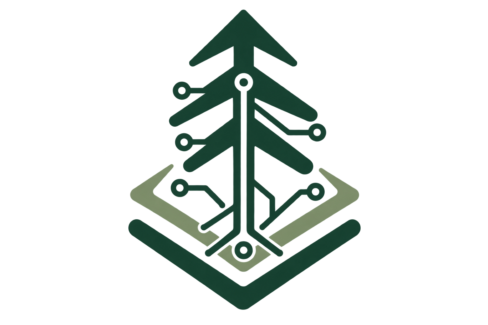

PICEA

About the project
PICEA (ProgrammIng and Compiler Environment of MYRTUS Accelerators) is a subproject of MYRTUS, and forms the central compiler infrastructure for the Design and Programming Environment (DPE). All analysis, optimization, and backend code generation for DPE targets flow through the dialects and passes defined here.
The compiler is built on top of MLIR, which allows each stage of the pipeline to be expressed as a dialect lowering — from high-level dataflow graph descriptions down to target-specific output. Each dialect in this project represents one layer of that pipeline.
This project is based on LAKSA, the compiler infrastructure developed for the MYRTUS project, and extends it with the DPE-specific dialects and passes.
The
Base2dialect is a reimplementation of KFAFSP/base2-mlir.The
DFGdialect is a reimplementation of Feliix42/dfg-mlir.
Why name PICEA?
Picea is the Latin genus name for spruce. It’s a fitting namesake for this project rooted at TU Dresden’s Chair for Compiler Construction: the Norway spruce (Picea abies, German Fichte) is the tree that has defined Saxony’s forests since large-scale reforestation swept the Ore Mountains (Erzgebirge) and Saxon Switzerland in the 18th and 19th centuries, and it remains the region’s most common conifer today.
Guides
In-depth walkthroughs of individual targets live under docs/guides/.
They carry the rationale behind a lowering path that does not fit in a tablegen summary, such as why the passes are ordered the way they are and which invariants they rely on.
They are built into the Sphinx documentation alongside the generated per-dialect and per-pass reference.
LAKSA covers lowering a
linalggraph to HLS C++ for resource-constrained edge FPGAs: kernel classification and line buffering, theconvert-to-emithlspipeline, the BRAM/DSP ILP and the generated artifacts.CGRA covers lowering a loop nest onto the STRELA CGRA attached to an X-HEEP RISC-V core: the
cgradialect, fabric legalization, driver generation and DFG export for the mapper.
Development Environment (Nix)
This repo ships a Nix flake that provides a complete dev shell with LLVM/MLIR, cmake, ninja, mold, doxygen, gurobi, and the Python toolchain already on PATH, with LLVM_DIR, MLIR_DIR, LLVM_EXTERNAL_LIT, PYTHONPATH, GUROBI_HOME, and GRB_LICENSE_FILE set automatically:
nix develop
If you use direnv, direnv allow will load the shell automatically via the included .envrc.
With the shell active, build.sh detects the toolchain env vars and configures/builds directly, no arguments needed:
bash build.sh
Build on Ubuntu 24.04 (no Nix)
Built and tested against llvm-23.1.2.
Both x86_64 and aarch64 are supported; build.sh reads uname -m and picks the matching Gurobi build (linux64 / armlinux64) itself.
Outside the Nix shell, build.sh installs the system packages, fetches LLVM/MLIR and Gurobi, and sets up the Python venv, so it needs no arguments here either:
bash build.sh
The prebuilt LLVM/MLIR tarball is about 700 MB and lands in build/, so the first run takes a while.
Gurobi license
A license is required however you build, and nothing here creates one for you.
build.sh only checks that the license file exists and warns if it does not; the build still succeeds without it, but anything using Gurobi fails at runtime.
Put your license at $HOME/.gurobi/gurobi.lic, which is where both the Nix shell and build.sh look by default.
To keep it somewhere else, point GRB_LICENSE_FILE at it before building:
export GRB_LICENSE_FILE=/path/to/gurobi.lic
Installing
cmake --install build --prefix /where/you/want
This gives you bin/ with the four tools, include/ with the headers and the TableGen output merged into one tree, lib/ with the static libraries, and lib/cmake/picea/ so that a downstream CMake project can do:
find_package(PICEA REQUIRED)
target_link_libraries(my-tool PRIVATE PICEA::DFGIR)
target_include_directories(my-tool PRIVATE ${PICEA_INCLUDE_DIRS} ${MLIR_INCLUDE_DIRS})
Pass --component to install one piece on its own: PICEATools, PICEAHeaders, PICEALibraries, PICEADevelopment, or PICEAPythonModules.
The Python package
The bindings are a pip package, built from this repository:
pip install /path/to/picea
While working on the bindings themselves, cmake --build build --target install-python-package does an editable install instead, so edits to the .py sources under python/mlir_picea/ take effect without reinstalling.
cmake --install is not a third way to do this, and nothing it writes is a pip source directory.
It copies the package to <prefix>/mlir_picea, which no interpreter looks in, as a staging copy for packagers to relocate.
That path is what it is because pip sets the install prefix to the wheel’s platlib directory, so the package has to sit at the root of the prefix.
Run the tests
The .mlir FileCheck test suite under test/ is run with:
cmake --build build --target check-picea-mlir
Using the Python bindings
See python/examples/ — it mirrors test/’s layout, with one .py file per .mlir test rebuilding the same IR via the Python bindings and running the same pass(es).
Start there for runnable references on constructing ops and invoking passes.
cmake --build build --target check-picea-python
This target verifies every example still matches its .mlir counterpart, depending on install-python-package to rebuild and reinstall first.
Build the documentation
The Doxygen and Sphinx documentation is found under build/docs/sphinx/index.html:
cmake --build build --target build-picea-doc
The target installs docs/requirements.txt into the configured Python first.
Compiling a design
resin is the driver.
It dispatches to picea-opt and picea-translate, so everything below can also be done by hand with those two.
Run one pipeline and one translation:
resin input.mlir -p convert-to-emithls -t emithls-to-cpp -o main.cpp
--hls does the whole thing instead.
It lowers the input twice and writes every artifact a board deployment needs below one directory:
resin input.mlir --hls -o out_dir
out_dir/
├── hls.mlir the design, lowered to the EmitHLS dialect
├── ref.mlir the same input lowered to emitc instead
├── profiles/
│ └── profiles_K26_PL_model.yaml
│ per-process cycles from LAKSA's FPGA model
├── hw/ what the build host needs
│ ├── main.cpp Vitis HLS input
│ ├── run_hls.tcl C synthesis and IP export
│ ├── run_vivado.tcl block design, synthesis, implementation, bitstream
│ ├── build.sh runs both, extracts <design>.bit from the XSA
│ └── extract_hls_profile.sh
│ extracts per-process cycles from Vitis HLS reports
└── app/ what the board needs
├── app.h buffer sizes and AXI-Lite register offsets
├── app.c userspace driver, talks to /dev/laksa
├── app.dtsi device tree overlay
├── ref.h the scalar reference
├── ref.c compares the board's output against ref.h
└── run.sh loads the design, runs it, checks it
Every hw/ artifact and most app/ ones are translated from hls.mlir.
ref.h and ref.c come from ref.mlir, which is the same input lowered without any of the HLS-specific restructuring, so the reference computes what the design is meant to compute rather than a re-derivation of what it does.
profiles/profiles_K26_PL_model.yaml contains the per-process cycle counts
selected by the FPGA model used during pragma design-space exploration, in
Mocasin’s execution.processes.profiles format.
Each step prints what it is producing, so a failure names the artifact that could not be written.
--num-bram and --num-dsp give the pragma DSE a different resource budget than the default one of convert-to-emithls (by default 288 BRAMs and 1248 DSPs):
resin input.mlir --hls --num-bram=144 --num-dsp=600 -o out_dir
Running a design on the board
hw/ and app/ are independent and can live on different machines.
On the build host, with the Xilinx tools sourced:
# In hw
./build.sh
This runs vitis-run --mode hls, then vivado -mode batch, then extracts <design>.bit from the exported XSA.
It takes a while.
<design> is the name of the design’s top function.
<design>.bit is the one file the board needs out of hw/.
Put it in the app/ directory, next to app.c, and deploy that directory to the board however you like; run.sh looks for the bitstream beside itself and nowhere else.
On the board, which needs laksa-hls-kria-driver loaded and its laksa.h installed:
# In app
./run.sh
run.sh compiles the overlay with dtc, loads it and the bitstream with fpgautil, builds app and ref, fills any missing input<n>.bin with random bytes, runs the design, and compares what it wrote against the reference:
output0.bin: all <num> elements match the reference
Mismatches are reported per element, with the index into the output buffer, and ref exits non-zero.
The .bin files are raw dumps of the DMA buffers with no header, one input<n>.bin per argument the kernel reads and one output<n>.bin per argument it writes.
Dropping in your own inputs of the right size is all it takes to run real data; the sizes are in app.h.
Exporting a profiled application to Mocasin
Mocasin needs the application graph and an execution profile for every processor type on which each process may run. LAKSA generates these as separate YAML files so that measurements performed on another machine can be added later.
Prepare the application and profiling artifacts
Generate the Mocasin application template, the FPGA artifacts, and the CPU benchmark in one output directory:
mkdir -p out_dir
resin input.mlir --mocasin -o out_dir
resin input.mlir --hls -o out_dir
resin input.mlir --cpu-profile -o out_dir
The three commands can also be run independently when only some of the artifacts are needed.
Obtain FPGA profiles
The HLS flow immediately writes
out_dir/profiles/profiles_K26_PL_model.yaml. These cycle estimates come from
LAKSA’s internal FPGA model and are available without running Vitis HLS. They
provide a useful initial profile when the Xilinx toolchain or a synthesis host
is unavailable.
For more accurate, synthesis-derived estimates, transfer out_dir/hw/ to a
machine with Vitis installed and build the design there:
cd hw
./build.sh
After transferring the resulting hw/ directory back into out_dir/, extract
the worst-case latency reported for each process:
out_dir/hw/extract_hls_profile.sh
This creates out_dir/profiles/profiles_K26_PL_hls.yaml. Both FPGA profile
files may remain in the directory; the merger automatically prefers the Vitis
HLS result over LAKSA’s internal model estimate.
Obtain CPU profiles
The CPU flow prepares out_dir/cpu/, which contains one native benchmark for
all outlined main_node_N processes. Transfer this directory to the target
platform, run the benchmark there, and transfer it back without changing its
structure:
cd cpu
./run.sh
The current default is CortexA53, matching the application processors on the
Kria KV260. If access to the hardware cycle counter is restricted, run the
script with sudo. Use ./run.sh --help to select a process or adjust the
measurement parameters.
Back on the development machine, collect the measured profile alongside the FPGA profiles:
cp out_dir/cpu/profiles_*.yaml out_dir/profiles/
Merge the application profiles
Run the merger generated with the Mocasin template:
out_dir/mocasin/merge_profiles.sh
When several fragments provide the same process and processor type, the merger
uses their provenance rather than their filenames or discovery order. The
default priority is laksa-model < hls < benchmark; duplicate values from the
same source remain an error.
The merger assigns the synthetic graph inputs and outputs to CortexA53 with
a latency of one cycle. The resulting out_dir/mocasin/application.yaml is
ready to use as a Mocasin application.